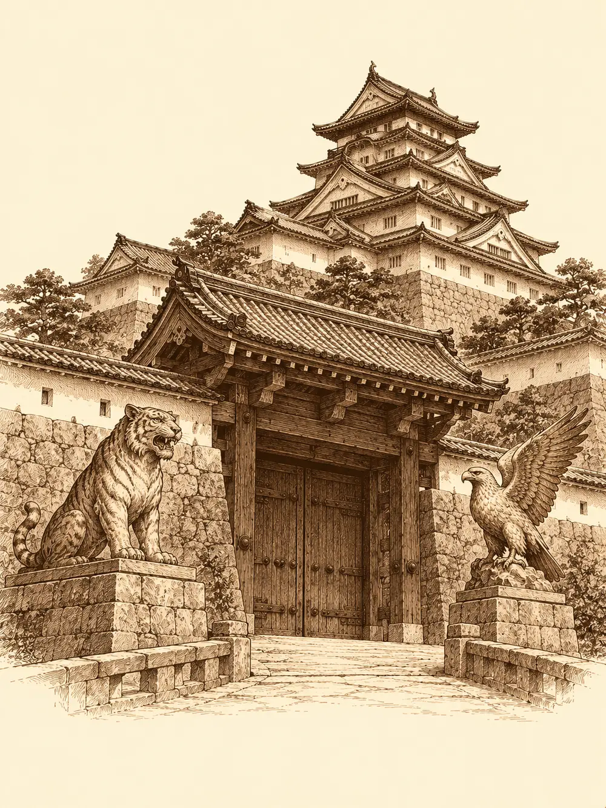

Capítulo 32
La boda del shogun
Libro III · La boda del shogun
Los monos de Sun Gukon lo habían dejado todo hecho un desastre, y nadie se molestaba ya en recogerlo. En un rincón de la sala había una cuna nueva para la bebé, comprada en el último viaje a Sho. El bakeneko del enano dormía enroscado junto a la pared, ocupando media estancia, y Shizuka jugaba en el suelo con el perrito de la casa.
Los recién llegados empezaban a encontrar su sitio, cada uno a su manera. Erk estaba a gusto en Ukio, más de lo que esperaba, pero no se le iba de la cabeza la pregunta de dónde venía, y quería conocer a aquel otro ser alado del que todos le hablaban. Ikari enseñaba el dibujo de la máscara a todo el que le pareciera sabio, buscando pistas, y a partir de las ocho de la tarde se iba con Mosto a beber, o a robar sake de las casas, que para el caso era lo mismo. Maroxi había dejado al alquimista los frascos de sangre negra y, entretanto, ensayaba encoger su propio cuerpo, un poco más cada día. Hiki acompañaba con su laúd a los monos de Sun cuando cantaban sus alabanzas, y parecía alimentarse de la idea de que aquello acabaría fatal.
Sirth abrió una carta con el sello del shogun.
"Buenas noticias. Doscientas monedas para cada uno".
El shogun se casaba, y quería que los cazadores se encargaran de la seguridad durante la ceremonia. Maroxi se preguntó en voz alta por qué alguien con su propia guardia necesitaba a un puñado de cazadores de yokai. Sirth se sacudió la armadura.
"¿Y quién no va a querer a los mejores? Sus samuráis son capaces, pero no contra algo bien preparado".
A Ikari le interesó la idea de estar cerca del gobernante; quizá así llegara antes a los seguidores de Otakemaru. Hiki dijo que solo quería las doscientas monedas. Shizuka se acercó, oliendo un viaje.
"Esta vez no vienes", le dijo Sirth.
La niña se cruzó de brazos. El perro, a su lado, miró al clérigo con unos ojos extraños, demasiado humanos, como si entendiera perfectamente lo que estaba pasando. Maroxi le guiñó un ojo a la niña, salió por la puerta y, en cuanto la cerró, se convirtió en ella.
Con la cara y la voz de Shizuka, Maroxi se presentó en la tienda del alquimista para recoger sus frascos. El hombre le devolvió la sangre sin haber averiguado nada.
"Dile a tu amigo que en la capital quizá encuentre alquimistas mejor preparados".
Le entregó además una lista de ingredientes que le hacían falta, por si de paso se los podían conseguir, y le dio a la falsa niña un golpecito en la cabeza. Hiki, mientras tanto, cobraba de Haru la parte del pescado. Ya en la calle, la verdadera Shizuka, que había salido a jugar, se cruzó con una copia de sí misma que se transformó delante de ella en Maroxi. Ella ya lo había visto hacer. No se inmutó.
En el burdel, Maroxi y Erk probaron suerte en la esfera mágica de la madame; Ikari entró sin decir palabra y metió las monedas con cara de vicio. A la salida, Maroxi le preguntó a la madame si había oído hablar de una espada de cristal, algo legendario que los libros situaban vagamente en el sur. Ella había recorrido parte de Kuroto y no sabía nada de esa espada en concreto, pero prometió preguntar por algún mago versado en las artes del yin y el yang que supiera de esas cosas.
"Qué muchacho tan guapo", dijo cuando se iba, y a Maroxi le recorrió un escalofrío.
En la taberna, Kitaro no quiso cobrarles nada.
"A los hombres que me devolvieron la vida no les voy a cobrar. Shiro, prepara cuatro paquetes de raciones. Para dos semanas".
Les preguntó a dónde iban, y cuando le dijeron que a la boda del shogun se le iluminó la cara: por fin se casaba aquel pícaro, por fin habría herederos. Maroxi propuso que no fueran con las manos vacías; a una boda se lleva un presente. Hiki dijo que su presente sería su música. Maroxi miró a Erk con una expresión que quería decir que no soportaba a los músicos, pero Ikari insistió en algo más sencillo: comida. Fruta, carne, lo que fueran encontrando por el camino.
Sirth los esperaba a la salida del pueblo con un carro y un caballo. El carro no estaba en su mejor momento.
El viaje fue largo, de dos semanas según les habían dicho, y tranquilo. Ikari, cada vez que una tabla del carro se aflojaba, la volvía a unir con un poco de magia, y el carro aguantó hasta el final gracias a sus remiendos. Erk volaba por encima de los árboles buscando frutales y bajaba con las manos llenas de frutas brillantes, algunas tan apetecibles que se las guardaba para ella. Maroxi cazaba y desollaba piezas para que hubiera carne fresca, y en las paradas seguía intentando hacerse más pequeño. Y Hiki, sentado en la parte de atrás, convertía en baladas cada pequeña desgracia: una fruta podrida, una tabla rota, una presa que se escapaba. Al principio a los demás les extrañó que el bardo cantara sus penurias en lugar de sus hazañas. Después se acostumbraron.
Sho estaba en plena efervescencia. Las calles estaban empedradas, la gente era más rica y por todas partes patrullaban samuráis con armadura. Algunos comercios cerraban antes de hora por la boda. Sirth les dio una hora para conocer la ciudad.
Erk entró en una tienda de ropa y en un momento la rodearon quince costureras que le midieron las patas, las alas y todo lo demás hasta que la mujer al cargo apareció con un kimono de rayas doradas, azules, rojas y blancas. Le pidieron cinco monedas. Erk dejó diez sobre el mostrador.
"Ya eres mi clienta favorita, preciosa".
Maroxi encontró al alquimista de la capital, un hombre llamado Kasay, y le mostró uno de los frascos. Kasay echó unas gotas en un platillo, las miró al trasluz, las examinó con varias lentes, les añadió reactivos que burbujearon y, para sorpresa de Maroxi, acabó probándolas.
"Sangre demoníaca", dijo.
Le enseñó en sus libros que con ella se podía dar propiedades a armas, armaduras y otros objetos, pero que no bastaba con untarla sobre el metal; hacían falta conjuros, y si algo salía mal, el objeto podía quedar maldito. Si buscaba a alguien capaz de algo así, el mejor era un mago muy poderoso de esas mismas artes, pero había salido hacia Hakara, al norte, por encargos del shogun, y tardaría en volver. No quiso cobrar. Maroxi le dejó una moneda igualmente. Ikari aprovechó para darle la lista del alquimista de Ukio; Kasay prometió tenerlo todo preparado para cuando se marcharan.
El castillo del shogun era un edificio de tejados escalonados rodeado de una muralla, con grandes esculturas de animales a ambos lados de la puerta: un tigre, un águila, otras bestias. Un samurái les abrió con desconfianza. Dentro los esperaba Sirth, que le estaba hablando de su dios a un samurái con cara de portero harto.

El shogun los recibió rodeado de sus cuatro consejeros, hombres gruesos y ostentosos que no paraban de comer. Necesitaría ocho escoltas, dijo; llegarían otros tres. Unos lo protegerían a él y otros a su futura esposa, porque la tradición les impedía verse antes de la ceremonia, y durante los preparativos, bañarse y vestirse, estarían solos, sin su guardia habitual.
Sirth decidió el reparto. Los cuatro nuevos, que se conocían ya entre ellos, protegerían a la novia en el ala oeste. Él y los tres que faltaban cuidarían del shogun.
Maroxi le habló entonces del regalo que traían en el carro. El shogun mandó a dos samuráis a buscarlo, y cuando volvieron cargados con fruta y carne, los consejeros murmuraron con aprobación.
"Empezáis a caerme bien", dijo el shogun. Hiki tocó algo alegre por una vez, y el gobernante siguió el ritmo con un dedo. "Id a la taberna y bebed lo que queráis. Corre de mi cuenta".
Erk pidió platos con pescado crudo e insectos y zumo de bayas. Ikari bebió todo lo que pudo, ya que pagaba el shogun. Maroxi bebió con moderación y observó a la gente. Hiki se fue a pasear. Al caer la noche, toda la ciudad subía hacia la colina del castillo, ricos y pobres, niños que buscaban una rendija en el muro para ver a la novia. Los samuráis apartaban a los que se pasaban de la raya. Uno de ellos lanzó sobre la multitud un hechizo que calmaba los ánimos, y la gente siguió gritando vivas al shogunato, pero más tranquila.
La sala de la novia estaba llena de ropa, de regalos, de monedas y esculturas amontonadas sobre las mesas, de animales disecados. En el centro había una piscina de agua cristalina. Unas cuantas ayudantes iban y venían, y la novia, que acababa de salir del baño, se escondió detrás de un biombo.
Maroxi, que se fijaba en los cuerpos por costumbre, empezó a ver cosas. Una de las ayudantes tenía la piel escamosa cuando la luz le daba de lado. A otra se le movía el pelo solo, mechón a mechón, como si tuviera vida propia. El cuello de una tercera parecía un acordeón cerrado. Ya había visto aquello en el burdel.
"Algo pasa con estas ayudantes", le susurró a Hiki. "No son lo que parecen".
Hiki no le hizo mucho caso. Una de las ayudantes le lanzaba miradas insinuantes desde la mesa de los regalos, y él le respondía con todo su repertorio de cumplidos. Erk se ofreció a ayudar a vestir a la novia, y una de las sirvientas, la del pelo inquieto, intentó apartarla; Erk insistió y acabó ayudando igualmente. Ikari, que vigilaba la puerta del jardín, pasó por detrás de las cajas y vio el pelo de la mujer que coqueteaba con Hiki deslizándose hacia el bardo para atraparlo.
"Hiki", dijo en voz baja. "El pelo".
La ayudante que estaba junto al biombo dejó caer los brazos al suelo. Literalmente. Se le desprendieron y su cuerpo se convirtió en una serpiente enorme que se alzó gritando. A otra le salió una boca en la nuca. Otra estiró el cuello, larguísimo. Erk agarró a la novia y la apartó hacia atrás de un empujón. Al mismo tiempo, desde las salas de al lado y desde el exterior llegaban gritos y ruido de acero: estaban atacando también por fuera.
La serpiente dio un coletazo a Maroxi, que lo esquivó.
"¿Por qué nos atacáis? En nuestro pueblo hay seres como vosotras, y vivimos en paz con ellos".
"¡Vosotros, cazadores, nos matáis! ¡Y ahora os unís a él! ¡Tenéis que morir!".
Maroxi intentó dormirla y no lo consiguió. Se envolvió en un escudo, se puso a bailar con la espada de sombras y empezó a abrir heridas. La mujer de cuello largo envolvió la sala en un silencio absoluto, en el que ninguna palabra mágica podía pronunciarse. Erk quedó atrapada primero por la cola de una serpiente, se zafó, y después la sujetó el pelo vivo de otra. Hiki repartía inspiración y susurros terribles.
Ikari se puso el anillo de sombras en el dedo y lo hizo girar. Primero abrió un remolino que arrancó a Maroxi de donde estaba y lo dejó a salvo lejos de allí. Después lanzó una bola de fuego en medio de las atacantes. Dos cayeron; una de ellas era la que mantenía el silencio, y el sonido volvió a la sala de golpe. Algo de lo que había en las mesas también se quemó. Hiki le susurró a la que sujetaba a Erk, y la mujer se desplomó soltándola.
Quedaba una serpiente, asustada. Erk le disparó una flecha que, al clavarse, la envolvió en raíces y la inmovilizó. Alguien dijo que quizá deberían interrogarla. Antes de que nadie decidiera nada, Maroxi le dio otro tajo, y Hiki le susurró las últimas palabras.
"Malditos cazadores", dijo la criatura al morir. "Me vengaré".
Hiki remató la escena con una balada sobre la serpiente caída.
La novia salió de detrás del biombo, corrió hacia Erk y la abrazó con fuerza.
"Me habéis salvado. Gracias".
Fuera, el ruido había cesado. Al abrir la puerta encontraron a Sirth, a un ciervo con escudo, a un hombre con pinta de samurái y a un ser de grandes alas. Habían acabado también con unas mujeres serpiente como aquellas. El shogun estaba a salvo. Las atacantes habían dicho algo contra el shogun, contra los cazadores que lo servían; nadie sabía nada más.
Erk miró al ser alado mucho rato. Así que aquel era Hayate.
La boda siguió adelante. Los samuráis retiraron los cuerpos y limpiaron la sangre. Erk volvió a ayudar a la novia, que se llamaba Rua, a terminar de vestirse, y la acompañó por el pasillo hasta el altar, donde se despidió de ella. El shogun la esperaba sentado en un cojín, con armadura de gala. Hubo votos, lágrimas, el beso, y después el convite en el jardín.
Más tarde, el shogun mandó llamar a los cuatro que habían protegido a su esposa.
"Mi mujer me ha contado lo que habéis hecho. Sentaos. Bebed con nosotros".
Les sirvieron sake. Como no le pedían nada, decidió elegir él. A Hiki le dio un estoque que le permitía devolver un hechizo cuando un enemigo erraba un golpe estrepitosamente contra él. A Maroxi, una espada corta de un antiguo samurái suyo, llamada Desenfunde: decían que se desenvainaba tan rápido que podía cortar a varios enemigos a la vez, en un solo movimiento. Maroxi la sacó un poco de la vaina, la hizo girar con la muñeca y volvió a guardarla con todo el respeto del mundo. A Ikari, que se escondía la cara bajo el sombrero, le tendió una botella de sake redonda.
"Dicen que es mágica. Que nunca se acaba".
Y a Erk le dio un arco cuyas flechas atravesaban a un enemigo para alcanzar al que estaba detrás.
Rua se sentó junto a Erk y estuvieron hablando mucho rato. Cuando, ya tarde, le contaron al shogun el estado en que estaba su carro, él ordenó que les prepararan uno nuevo, con caballos mejores.
Erk buscó a Hayate con la mirada entre los invitados. Seguía allí, al otro lado del jardín. Todavía no había hablado con él.